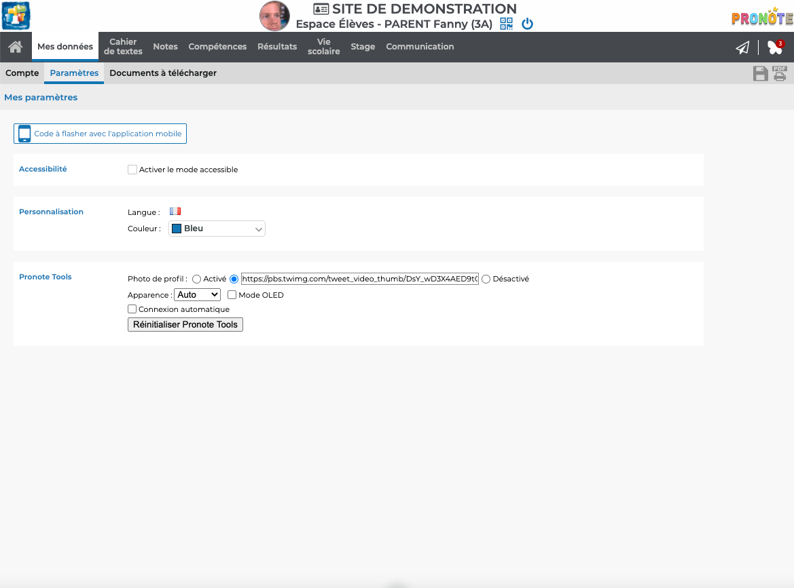
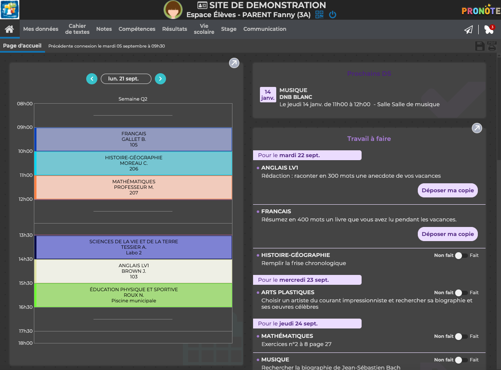
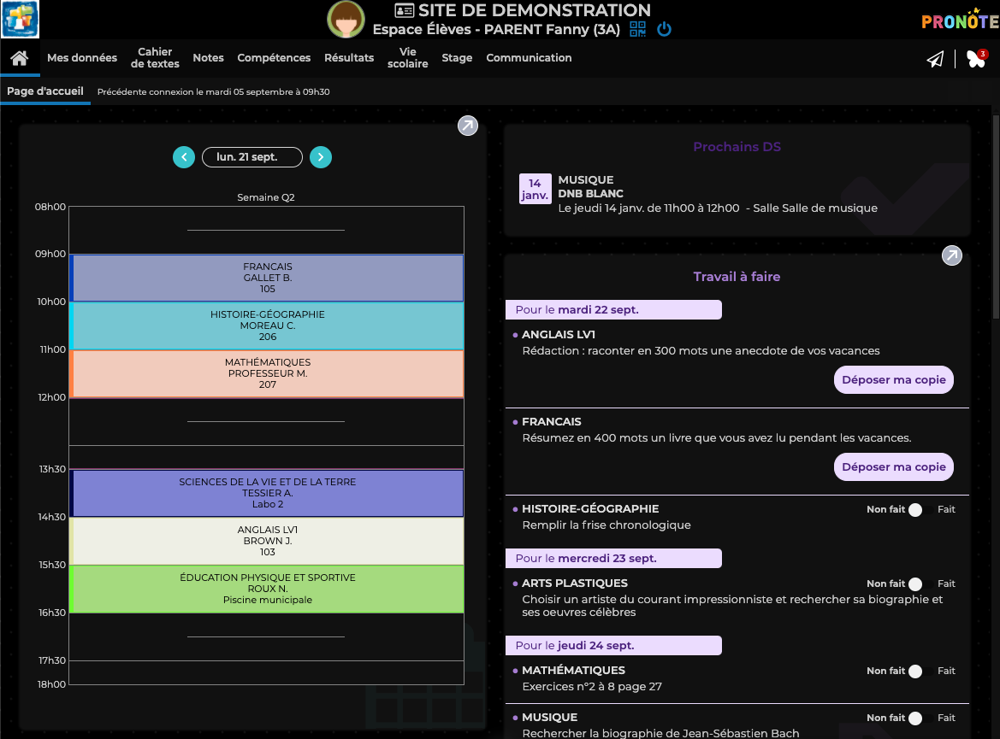
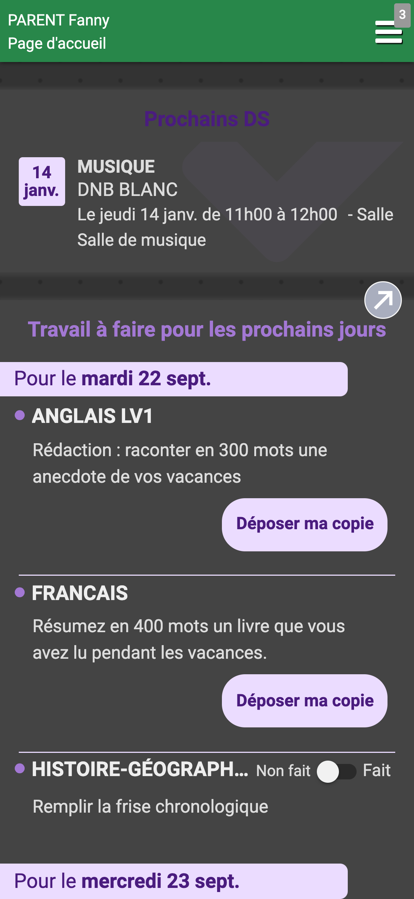

Quelques outils pour rendre Pronote plus beau !
Vous souhaitez changer de photo de profil pour vous amuser ou la désactiver pour qu'elle ne soit pas visible ? Pronote Tools est fait pour vous.
Marre de vous bruler les yeux en ouvrant Pronote, profitez du mode sombre intégré à Pronote Tools.
Vous trouvez le mode sombre pas assez sombre, le mode OLED est aussi disponible pour rendre tout encore plus noir.
Si vous aimez Pronote Tools, sachez qu'il existe aussi une version mobile avec toutes les fonctionnalités de Pronote Tools !

Cette extension / injecteur de code est sous licence GPL v2.0
Copyright (C) 2021 DocSystem